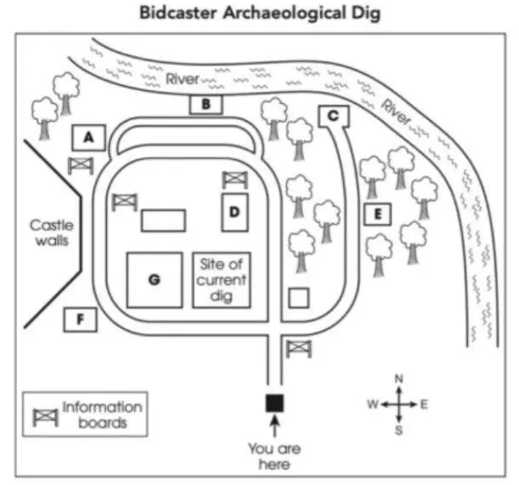

Part 1 of 4
Furniture Rental Companies
Questions 1–10
Questions 1–10
Complete the table below. Write ONE WORD AND/OR A NUMBER for each answer.
| Name of company | Information about costs | Additional notes |
|---|---|---|
Peak Rentals | Price ranges from $105 to $ per room per month | The furniture is very Delivers in 1–2 days Special offer: Free with every living room set |
And Oliver | Mid-range prices 12% monthly fee for | Also offers a cleaning service |
Larch Furniture | Offers cheapest prices for renting furniture and items | Must have own Minimum contract length: Six months |
Rentals | See the for the most up-to-date prices | are allowed within 7 days of delivery |
Questions 11–20
Choose the correct letter, A, B or C.
Label the map below. Write the correct letter A-G next to questions 17-20.

Questions 21–30
Choose the correct letter, A, B or C.
What comment is made about the programme for each of the following shows? Choose FOUR answers from the box and write the correct letter, A-F, next to Questions 27-30.
Questions 31–40
Complete the notes below. Write ONE WORD ONLY for each answer.
Designing products that can be accessed by a diverse range of people without the need for any
Not the same as universal design: that is design for everyone, including catering for people with problems.
which are adjustable, avoiding back or neck problems
in public toilets which are easier to use